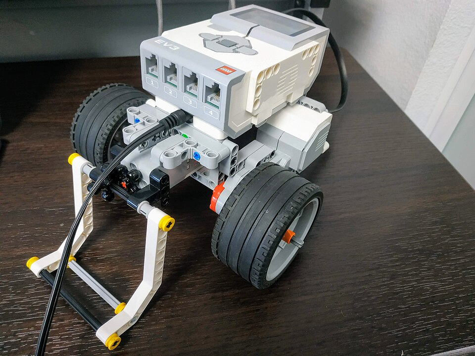

Алгоритмы встречаются каждый день
Многие обычные дела выполняются по определённому порядку.
С утра мы собираемся в школу, выполняем задания, готовим рабочее место. Часто эти действия происходят в знакомой последовательности: одно действие следует за другим.
Алгоритм — понятная исполнителю последовательность точных команд для решения определённой задачи.
Пример: собираем портфель перед школой
Здесь есть задача — подготовить портфель, команды — что нужно сделать, и результат — необходимые вещи собраны.
Исполнители алгоритмов
Команды выполняет человек, устройство или программа.
Исполнитель алгоритма — человек или устройство, которое понимает и выполняет заданные команды. Компьютерная программа также может выступать исполнителем.
Человек может понять словесную инструкцию. Робот действует по командам, которые предусмотрены его устройством и программой. Компьютер обрабатывает данные в соответствии с выполняемой программой.
Выполняет указания и инструкции.
Двигается и действует по программе.
Выполняет команды программы.
Работает по заданным правилам.


Система команд исполнителя
Если робот понимает только эти четыре команды, указание «нарисуй дом» для него непонятно. Система команд исполнителя — это набор команд, которые он способен выполнять.

У автоматических устройств команды могут быть скрыты от наблюдателя. Мы видим действия устройства, но не обязательно знаем программу, по которой оно работает.
Алгоритмы помогают обрабатывать информацию
Из исходных данных можно получить новую информацию.
Когда мы считаем, сравниваем или выбираем нужные сведения, происходит обработка информации. Она может выполняться по определённому алгоритму.
Другой пример: ученик читает расписание уроков (исходная информация), определяет нужные предметы (обработка) и выбирает учебники (результат).
Но обработка информации — не всегда вычисление. Иногда достаточно правильно рассуждать, чтобы узнать то, что не было сказано напрямую.
Преобразование информации путём рассуждений
Новый вывод получается из уже известных фактов.
Логическое рассуждение позволяет установить новую информацию, опираясь на условия задачи. Для этого важно внимательно прочитать исходные сведения и последовательно сопоставить их.
Пример: сравниваем рост
Известно, что Ваня выше Пети, а Петя выше Саши. Из этих двух фактов следует: Ваня выше Саши и является самым высоким из троих.
Загадочный «чёрный ящик»
Мы знаем, что поступает на вход и что выходит, но не видим внутреннее правило.
«Чёрный ящик» — модель устройства или процесса, внутреннее устройство или правило работы которого неизвестно наблюдателю. Изучая входные и выходные данные, можно предположить, как он действует.
Известные результаты работы
| Входное число | Выходное число |
|---|---|
| 2 | 5 |
| 4 | 7 |
| 6 | 9 |
Предполагаемое правило: прибавить 3. Во всех трёх известных случаях выходное число на 3 больше входного: 2 + 3 = 5, 4 + 3 = 7, 6 + 3 = 9.
Однако несколько примеров не всегда позволяют однозначно определить правило: похожие результаты иногда можно получить разными способами. Поэтому предположение важно проверять на новых входных данных.
Вопросы для повторения
12 вопросов по материалу первой части темы.
- Что называют алгоритмом?
- Какие алгоритмы встречаются в повседневной жизни?
- Почему порядок выполнения команд бывает важен?
- Кто или что может быть исполнителем алгоритма?
- Что называют командой и системой команд исполнителя?
- Почему исполнитель не может выполнить любую произвольную команду?
- Что такое исходные данные и результат обработки информации?
- Как получить новую информацию с помощью вычислений?
- Как получить новую информацию путём логических рассуждений?
- Чем обоснованный логический вывод отличается от догадки?
- Что означает модель «чёрный ящик» и что известно наблюдателю о её работе?
- Как по нескольким входным и выходным значениям предположить правило работы «чёрного ящика» и зачем проверять это предположение?
✨ Итог урока
Алгоритмы помогают выполнять действия в определённом порядке. Их выполняют исполнители, у каждого из которых есть понятные ему команды. При обработке информации мы получаем результат из исходных данных, а логические рассуждения помогают делать новые выводы. Даже если правило скрыто в «чёрном ящике», его можно исследовать, сравнивая входные и выходные значения.